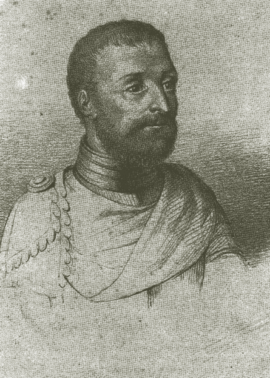
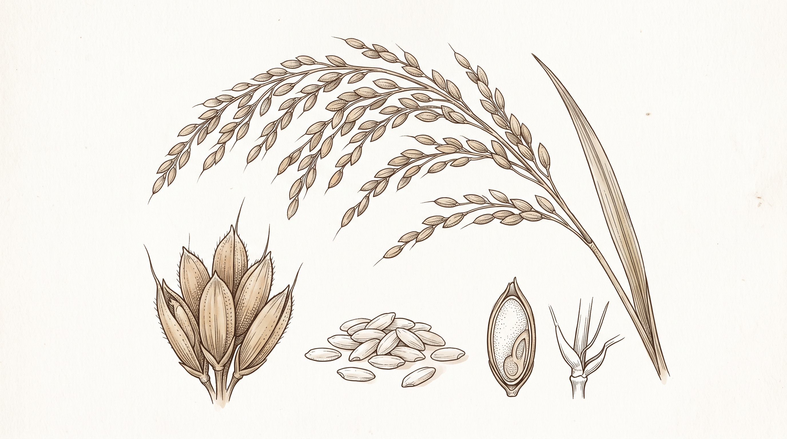

Daily Life and Customs
Pintados, feasts, and social roles recorded through an outsider's eyes.
Digital Historical Archive 1519 to 1522
Reading a 16th-century eyewitness account of society, language, and trade in the early Philippines.
In 1521, Antonio Pigafetta, an Italian from Vicenza, sailed with Ferdinand Magellan and reached islands he called Islas de San Lázaro. His account is among the earliest written European descriptions of the Philippines, and it offers a rare window into a society already connected to wider maritime worlds.
 Not a precise modern map
Not a precise modern map
A route remembered through surviving notes, coastal encounters, and the geography of the first voyage.
01, Introduction

Antonio Pigafetta (c. 1491 to c. 1534) was a Venetian nobleman from Vicenza who joined Ferdinand Magellan's expedition as a literate Italian volunteer, rather than a paid sailor, and careful eyewitness.
He survived the voyage, including the Battle of Mactan, and returned to Europe with notes that became the most sustained account of the expedition. His writing gives us unusually close glimpses of the people, languages, ceremonies, and ports encountered in the islands.
His account, usually translated as The First Voyage Around the World (Relazione del primo viaggio intorno al mondo), survives in four manuscript codices. It is valuable precisely because it is both detailed and partial, shaped by what a 16th-century European traveler could see, understand, and put into words.
Pintados, feasts, and social roles recorded through an outsider's eyes.
Some of the earliest European records of Visayan words and everyday speech.
His record helps trace the people, ports, and knowledge encountered during the first circumnavigation.
Here the voyage was briefly at peace, and the expedition met societies already well acquainted with ships, gold, and trade.
How to Read the Account
See what Pigafetta saw, then compare it with other evidence.
Part I Pigafetta's Notes
We start with the details he wrote down, such as coastlines, objects, tattoos, meals, meetings, and exchanges.
Part II His Point of View
Pigafetta was a 16th-century Italian nobleman and Catholic traveler. Language barriers and his habit of calling datus "kings" shaped what he wrote.
Part III Check Other Evidence
We compare his words with Song-Ming ceramics, the Butuan boats, Surigao gold, archaeological finds, and Portuguese accounts from the same period.
Part IV Put the Story Together
The voyage was not simply a story of European discovery. Local communities made choices, controlled ports, and took part in their own maritime world.
Field Notes Cebu, Homonhon & Palawan
Explore what Pigafetta saw and why it still matters.
Location: Limasawa / Cebu April 1521
The islanders greeted the Spanish crew warmly, offered food and drink, and took part in peace agreements.
In early island culture, sharing a meal and gifts was standard diplomatic courtesy and a way to test if new visitors came in peace.
It shows that early Filipinos had well-established customs of hospitality and diplomacy long before Spanish rule.
04, Language and Vocabulary
Pigafetta tried to write down words he heard, including numbers and terms for food, drink, boats, and social roles. These are some of the earliest European records of languages spoken in the islands, but they need to be read carefully.
Historians value these lists because they preserve a snapshot of speech from 1521. But a European traveler's spelling cannot show exactly how every word sounded. Pigafetta heard many words only once and wrote them using the spelling habits of his own language. Some words resemble later Visayan words, while others are harder to identify. Their value is that they record an encounter and give researchers a starting point for comparison, not a complete picture of any language.
No entries match your search. Try a broader term.
Port Economy Archipelagic Commerce
Explore goods exchanged in precolonial ports.
.jpg)
Mineral Wealth • Native Gold
What Pigafetta saw
Island leaders wore gold collars, rings, and armbands. Gold dust was weighed on small handheld scales when food was traded.
What it tells us
Gold was mined locally and used for adornment, exchange, and important gifts between leaders.
Local Philippine Mines Butuan, Surigao, Cebu
Staple Provisions • Rice
What Pigafetta saw
Communities provided large baskets of rice to help feed the European ships when their supplies were low.
What it tells us
Settled wet-rice farming produced enough food to support local communities and visiting crews.
Agricultural Surplus
Aromatics • Ginger and Cloves
What Pigafetta saw
He noted ginger, cinnamon, and other spices stored in ceramic jars, goods the fleet was eager to trade for.
What it tells us
The islands were linked to the regional spice routes that connected the Philippines with the Moluccas.
Regional Spice Routes.jpg)
Coastal Livelihood • Tuba
What Pigafetta saw
Islanders tapped coconut and nipa palms, collecting sweet sap in bamboo tubes to drink fresh or fermented.
What it tells us
People had skilled ways to ferment drinks and make full use of the trees growing along the coast.
Coastal Agroforestry
Maritime Technology • Balangay
What Pigafetta saw
Large plank-built sailing boats called balanghai carried local rowers and moved goods between islands.
What it tells us
Indigenous boatbuilders had the skills needed for long-distance travel and inter-island trade.
Inter-Island Sea Trade
Foreign Imports • China Trade
What Pigafetta saw
Chiefs served food on porcelain platters and wore imported Chinese silk, signs of older connections across the sea.
What it tells us
Trade with Ming China was already established before Magellan arrived, linking local ports to East Asian markets.
East Asian Maritime NetworkMaritime Geography An Archipelago Connected
Select a sea lane on the chart or use the route buttons to inspect the goods and relationships that connected Philippine ports to Asia.
Click a sea lane or port to open its route record.
Exhibit Conclusion Historical Verdict
His journal records traditions that still shape Filipino culture.
What Pigafetta Saw in 1521 Eyewitness Record
He described welcoming feasts hosted by Rajah Colambu and Rajah Humabon. Guests were served roasted meat, fish soup, rice cooked in leaves, and sweet palm wine (tuba) in shared porcelain bowls.
A living tradition, recorded in ink
The Living Legacy Today Modern Identity
Hospitality is still an important part of Filipino life. Sharing a meal, offering plenty of food, and serving drinks are ways we show guests trust and respect, just as people did five centuries ago.
Culture carried forward
Legacy from 1521: Sharing food and welcoming guests have always been part of how Filipinos greet the world.
Interactive Evidence Room Play to Learn
Match each object to the role it played in the world Pigafetta encountered. Click an object, then click its matching description—or drag it across.
The artifacts
What was it for?
Choose a match for each item.Archive unlocked
You matched every artifact correctly. You’re thinking like a historian: connecting objects to evidence, people, and place.
References & Archival Evidence
Manuscripts, translations, and studies used in this project.